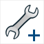

Les constructions sont une des fonctionnalités les plus puissantes de MathGraph32.
Les constructions sont des sortes de figures que l’on peut incorporer dans d’autres figures.
Une construction utilise des objets de la figure dans laquelle on l’incorpore, appelés objets sources.
Elle utilise de façon interne des objets (appelés objets intermédiaires) qui serviront à créer de nouveaux objets (appelés objets finaux) qui eux pourront être utilisés par les objets que l’on créera après dans la figure.
Les objets sources et finaux peuvent être des objets graphiques ou de type calcul. Les repères sont considérés comme des objets numériques dans la version java.
Les objets sources numériques peuvent être :
Les objets graphiques sources peuvent être :
Pour être valide, une construction doit respecter la règle suivante:
Les objets finaux ne doivent être construits qu’avec des objets construits uniquement avec les objets sources sources et chacun des objets sources doit servir au moins une fois pour créer un objet final.
Une seule exception à cette règle : Si les objets finaux sont construits en utilisant les objets sources et une variable qui n’est pas un objet source, la construction est acceptée et la variable utilisée fera partie des objets intermédiaires.
Les constructions sont enregistrées dans des fichiers dont l’extension est mgc (un tel fichier s’appellera par exemple Tangentes.mgc).
Les icônes pour créer et gérer les macro-constructions sont accessibles quand on clique sur l'outil  situé à droite de la barre d'outils supérieure.
situé à droite de la barre d'outils supérieure.
L'icône  sert à gérer les macro-constructions. Cliquer sur cette icône fait apparaître une boîte de dialogue de choix.
sert à gérer les macro-constructions. Cliquer sur cette icône fait apparaître une boîte de dialogue de choix.
L'icône

sert à créer une nouvelle macro-construction. Cliquer sur cette icône fait apparaître une boîte de dialogue de choix.On charge une construction dans une figure depuis un fichier à l’aide de l'icône  et en choisissant Incorporer une construction depuis un fichier.
et en choisissant Incorporer une construction depuis un fichier.
On utilise une construction déjà chargée dans la figure à l’aide de l'icône  et en choisissant Implémenter une construction de la construction de la figure.
et en choisissant Implémenter une construction de la construction de la figure.
On enregistre une construction sur un disque ou tout autre support d’enregistrement à l’aide de l'icône  et en choisissant Enregistrer une construction de la figure.
et en choisissant Enregistrer une construction de la figure.
Lorsqu’une construction a été implémentée dans une figure, il est possible d’obtenir que tous les objets intermédiaires redeviennent des objets normaux en utilisant l'icône  .et en choisissant l'item Fusionner les constructions de la figure ou Fusionner certaines constructions de la figure. Le premier fusionne toutes les constructions de la figure. Le second vous laisse choisir quelles sont les constructions de la figure à fusionner
.et en choisissant l'item Fusionner les constructions de la figure ou Fusionner certaines constructions de la figure. Le premier fusionne toutes les constructions de la figure. Le second vous laisse choisir quelles sont les constructions de la figure à fusionner
Comment définir une construction.
Pour définir une construction, on commence par choisir les objets sources numériques et graphiques.
Il est important de comprendre que, lors de l'implémentation de la construction, les objets sources numériques seront ceux qui devront être désignes en premier.
Le choix des objets sources se fait via l'icône puis Choix des objets sources numériques ou Choix des objets sources graphiques. Il faut penser à cliquer sur le bouton STOP rouge quand tous les objets ont été désignés.
Une fois les objets sources choisis on choisit les objets finaux numériques et graphiques. Il n'est possible de choisir que des objets exclusivement construits avec les objets sources spécifiés.
Le choix des objets finaux se fait via l'icône puis Choix des objets finaux numériques ou Choix des objets finaux graphiques. Il faut penser à cliquer sur le bouton STOP rouge quand tous les objets ont été désignés.
Il est possible d'annuler les choix des éléments sources et finaux via l'icône puis Réinitialiser la construction en cours.
Pour finaliser la construction en cours d'élaboration, utiliser l'icône puis Finir la construction en cours.
Dans le commentaire de la macro vous pouvez entrer les informations de votre choix et certaines indications qui seront affichées lors de l'implémentation de la construction pour guider l'utilisateur.
Imaginons que votre construction comporte comme un objet sources un calcul réel représentant une valeur d'un angle, un point et un cercle.
Vous pouvez alors ajouter au commentaire de la macro les lignes suivantes :
#1:la valeur de l'angle
#2:un point
#3:le cercle
Comment implémenter une construction.
On ne peut implémenter une construction que si celle-ci a été créée dans la figure ou incorporée dans la figure à partir d'un fichier.
Pour implémenter une construction, utilisez l'icône  puis Implémenter une construction de la figure.
puis Implémenter une construction de la figure.
Si la construction comporte à la fois des objets sources graphiques et non graphiques, ce seront les objets sources non graphiques qui seront demandés en premier lors de l'implémentation à l'aie d'une boîte de dialogue.
Il faudra ensuite cliquer sur les objets sources graphiques de la construction (si cette construction utilise des objets sources graphiques).
A noter : Si une construction utilise un seul objet non graphique et que c'est un repère, et si la figure dans laquelle on doit l'implémenter ne comporte qu'un seul repère alors ce repère est automatiquement choisi comme objet source pour la construction et la boîte de dialogue de choix des objets sources numériques n'apparaît pas.